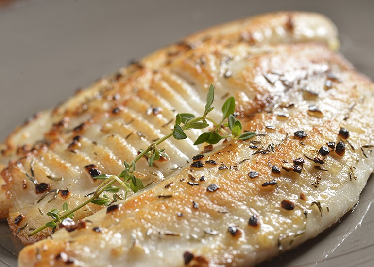

Papo de Panela
Papo de Panela
Peixe Grelhado com Alho e Limão
Ingredientes
- 4 filés de peixe (tilápia, merluza, etc.)
- 2 dentes de alho amassados
- Suco de 1 limão
- Sal e pimenta a gosto
- Azeite para grelhar
Modo de preparo
- Tempere os filés com alho, limão, sal e pimenta. Deixe marinando por 10–15 minutos.
- Aqueça uma frigideira com um fio de azeite.
- Grelhe os filés dos dois lados até dourar e cozinhar por completo.